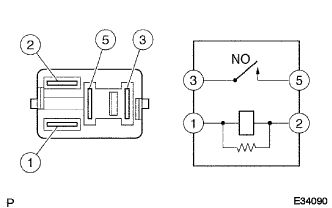

EFI Circuit Opening Relay ASSY Single Inspection |
| 1. EFI Circuit Opening Relay ASSY |
Conduction inspection
Use SST (Toyota Electrical Tester) to inspect the conduction between each terminal.
| Between terminals | Conduction |
|---|---|
| 1 ← → 2 | There is an conductor |
| 3 ← → 5 | Without conduction |
|  |
Using SST (Toyota Electrical Tester), when a battery voltage is applied between 1 ← → 2 terminals, confirm that there is an continuation between 3 ← → 5 terminals.